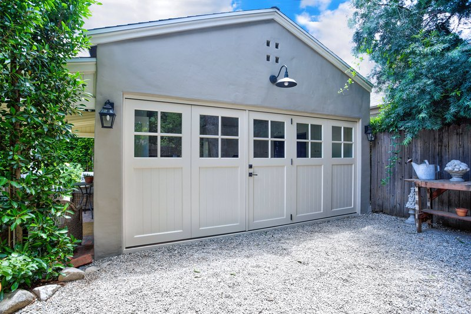

Measuring: rough first, exact later
To start a quote we only need the rough width and height of the opening and a photo of the wall. The exact measurements come after the design is agreed, and we check them against each other before anything is cut.

To start. Three numbers and a photo.
Width
Finished opening, jamb to jamb, at the top, middle and bottom. Write down all three; walls are rarely square.
Height
Finished floor to the underside of the header, at the left, centre and right.
Headroom and sideroom
From the header up to the ceiling, and from each jamb to the nearest wall or obstruction. This decides which doors can open where.
A photo
The whole wall, straight on, in daylight. It tells us the style, the trim and what the door has to live next to.
Before we build. Twelve measurements, cross-checked.
Once the design is agreed we send a one-page sheet with twelve measurements for you or your contractor to take: the opening in three places each way, the floor's slope, the header's depth, the jamb returns and the clearances. We cross-reference them, and any two that disagree get a phone call before they get a saw.
Then you get dimensioned shop drawings of your door to sign. Within Southern California our own crew can come and measure instead.